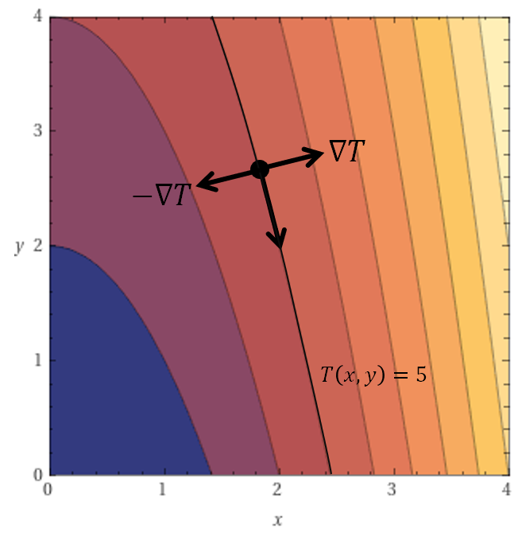

Lesson 21: The Gradient
For a real-valued function of three variables, \(f(x, y, z)\), the gradient is a vector denoted as \(\nabla f\). It is defined below, using the different notations we have for vectors and partial derivatives.
The Gradient
An Example
Given the function below, find its gradient.
The gradient is central to everything that comes next. It is one of the most powerful mathematical tools we have. In the next lesson we will prove the following properties, at any point where \(\nabla f \neq \mathbf{0}\).
- The gradient \(\nabla f\) points in the direction of greatest increase in the function.
- The opposite of the gradient, \(-\nabla f\), points in the direction of greatest decrease in the function.
- Any direction orthogonal to the gradient is a direction of no change in the function.
Suppose \(T(x, y)\) gives the temperature in the \(xy\)-plane. At each point:
- The gradient \(\nabla T\) points in the direction of most rapid increase in temperature.
- The opposite of the gradient, \(-\nabla T\), points in the direction of most rapid decrease in temperature.
- Moving orthogonal (perpendicular) to the gradient \(\nabla T\) is a direction along which the temperature remains constant. Following this direction means you are traveling along a level curve, a curve where the temperature does not change.
- Notice the gradient is orthogonal to the level curve of constant temperature, \(T(x, y) = 5\). This will be important later.

A Homework Problem
The function below gives the temperature \(T\), in \(^\circ\mathrm{C}\), at each point \((x, y, z)\) in space.
- Find the temperature at the point \((1, 2, 2)\).
- At the point \((1, 2, 2)\), find a vector that points in the direction of most rapid increase in temperature.
- At the point \((1, 2, 2)\), find a vector that points in the direction of most rapid decrease in temperature.
- At the point \((1, 2, 2)\), which of the following vectors points in a direction of no change in temperature?
Part (a)
The temperature is \(50^\circ\mathrm{C}\).
Part (b): the gradient points in the direction of most rapid increase.
Part (c): the direction of most rapid decrease is opposite the gradient.
Part (d): a direction of no change is orthogonal to the gradient, so its dot product with the gradient is zero. Only the first option works.
\(-6\mathbf{i} + 0\mathbf{j} + 1\mathbf{k}\)